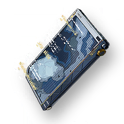

Survival code
Missions

For Exiles to read and acquire wilderness survival skills and experience.
Survival code compiled by the Exile Leader, it contains various survival skills and experience of the Exiles, the versions used by different camps will have slight differences.